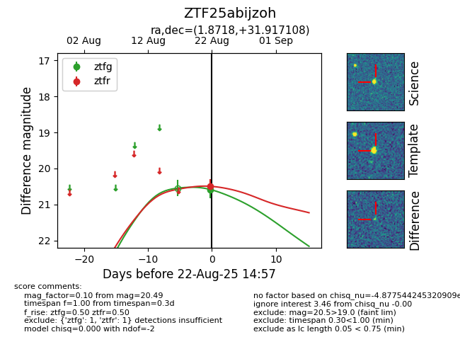

Target ZTF25abijzoh at 2025-08-22 14:57, see:
FINK: fink-portal.org/ZTF25abijzoh
Lasair: lasair-ztf.lsst.ac.uk/objects/ZTF25abijzoh
ALeRCE: alerce.online/object/ZTF25abijzoh
alt names
ZTF25abijzoh (ztf,alerce)
coordinates:
equatorial (ra, dec) = (1.8718,+31.91711)
galactic (l, b) = (112.1615,-30.03380)
photometry
last ztfg=20.58, ztfr=20.49
1 ztfg, 1 ztfr detections
